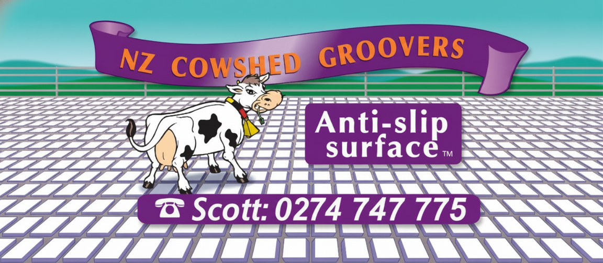

Primary logo · Purple ribbon banner + cartoon Friesian cow + "Anti-slip surface ™" capsule + Scott's mobile. Cow may break container edges; she sits on the highest visual plane. Future seasonal variants (winter / summer) pending from illustrator Scott Pearson.